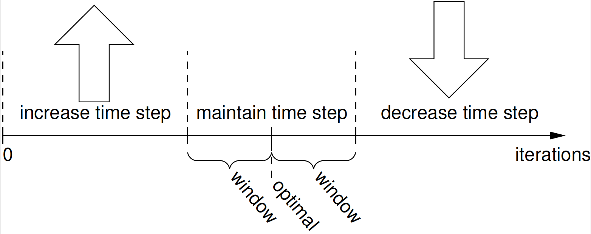

- dtThe default timestep size between solves
C++ Type:double
Unit:(no unit assumed)
Controllable:No
Description:The default timestep size between solves
IterationAdaptiveDT
Adjust the timestep based on the number of iterations
Description
The IterationAdaptiveDT Time Stepper provides a means to adapt the time step size based on the difficulty of the solution.
IterationAdaptiveDT grows or shrinks the time step based on the number of iterations taken to obtain a converged solution in the last converged step. The required optimal_iterations parameter controls the number of nonlinear iterations per time step that provides optimal solution efficiency. If more iterations than that are required to obtain a converged solution, the time step may be too large, resulting in undue solution difficulty, while if fewer iterations are required, it may be possible to take larger time steps to obtain a solution more quickly.
A second parameter, iteration_window, is used to control the size of the region in which the time step is held constant. As shown in Figure 1, if the number of nonlinear iterations for convergence is lower than (optimal_iterations-iteration_window), the time step is increased, while if more than (optimal_iterations+iteration_window), iterations are required, the time step is decreased. The iteration_window parameter is optional. If it is not specified, it defaults to 1/5 the value specified for optimal_iterations.
The decision on whether to grow or shrink the time step is based both on the number of nonlinear iterations and the number of linear iterations. The parameters mentioned above are used to control the optimal iterations and window for nonlinear iterations. The same criterion is applied to the linear iterations. Another parameter, linear_iteration ratio, which defaults to 25, is used to control the optimal iterations and window for the linear iterations. These are calculated by multiplying linear_iteration_ratio by optimal iterations and iteration window, respectively.
To grow the time step, the growth criterion must be met for both the linear iterations and nonlinear iterations. If the time step shrinkage criterion is reached for either the linear or nonlinear iterations, the time step is decreased. To control the time step size only based on the number of nonlinear iterations, set linear_iteration_ratio to a large number.
If the time step is to be increased or decreased, that is done using the factors specified with the growth_factor and cutback_factor, respectively. If a solution fails to converge when adaptive time stepping is active, a new attempt is made using a smaller time step in the same manner as with the fixed time step methods. The maximum and minimum time steps can be optionally specified in the Executioner block using the dtmax and dtmin parameters, respectively.
In addition to controlling the time step based on the iteration count, IterationAdaptiveDT also has an option to limit the time step based on the behavior of a time-dependent function, optionally specified by providing the function name in timestep_limiting_function. This is typically a function that is used to drive boundary conditions of the model. The step is cut back if the change in the function from the previous step exceeds the value specified in max_function_change. This allows the step size to be changed to limit the change in the boundary conditions applied to the model over a step. In addition to that limit, the boolean parameter force_step_every_function_point can be set to true to force a time step at every point in a Piecewise function. The time step size post function sync can be reset via the "post_function_sync_dt" input parameter as well.

Figure 1: Criteria used to determine adaptive time step size
schooltip
The IterationAdaptiveDT is often simply used to have an exponentially growing time step. For this purpose, the iteration related parameters are not required.
Example Input Syntax
[Executioner]
type = Transient
solve_type = NEWTON
start_time = 0.0
dtmin = 1.0
end_time = 10.0
[TimeStepper]
type = IterationAdaptiveDT
optimal_iterations = 1
linear_iteration_ratio = 1
dt = 5.0
[]
[]
Input Parameters
- cutback_factor0.5Factor to apply to timestep if difficult convergence occurs (if 'optimal_iterations' is specified). For failed solves, use cutback_factor_at_failure
Default:0.5
C++ Type:double
Unit:(no unit assumed)
Controllable:Yes
Description:Factor to apply to timestep if difficult convergence occurs (if 'optimal_iterations' is specified). For failed solves, use cutback_factor_at_failure
- cutback_factor_at_failure0.5Factor to apply to timestep if a time step fails to converge.
Default:0.5
C++ Type:double
Unit:(no unit assumed)
Controllable:No
Description:Factor to apply to timestep if a time step fails to converge.
- force_step_every_function_pointFalseForces the timestepper to take a step that is consistent with points defined in the function
Default:False
C++ Type:bool
Controllable:No
Description:Forces the timestepper to take a step that is consistent with points defined in the function
- growth_factor2Factor to apply to timestep if easy convergence (if 'optimal_iterations' is specified) or if recovering from failed solve
Default:2
C++ Type:double
Unit:(no unit assumed)
Controllable:Yes
Description:Factor to apply to timestep if easy convergence (if 'optimal_iterations' is specified) or if recovering from failed solve
- iteration_windowAttempt to grow/shrink timestep if the iteration count is below/above 'optimal_iterations plus/minus iteration_window' (default = optimal_iterations/5).
C++ Type:int
Controllable:No
Description:Attempt to grow/shrink timestep if the iteration count is below/above 'optimal_iterations plus/minus iteration_window' (default = optimal_iterations/5).
- linear_iteration_ratioThe ratio of linear to nonlinear iterations to determine target linear iterations and window for adaptive timestepping (default = 25)
C++ Type:unsigned int
Controllable:No
Description:The ratio of linear to nonlinear iterations to determine target linear iterations and window for adaptive timestepping (default = 25)
- max_function_changeThe absolute value of the maximum change in timestep_limiting_function over a timestep
C++ Type:double
Unit:(no unit assumed)
Controllable:No
Description:The absolute value of the maximum change in timestep_limiting_function over a timestep
- optimal_iterationsThe target number of nonlinear iterations for adaptive timestepping
C++ Type:int
Controllable:No
Description:The target number of nonlinear iterations for adaptive timestepping
- post_function_sync_dtTimestep to apply after time sync with function point. To be used in conjunction with 'force_step_every_function_point'.
C++ Type:double
Unit:(no unit assumed)
Controllable:No
Description:Timestep to apply after time sync with function point. To be used in conjunction with 'force_step_every_function_point'.
- reject_large_stepFalseIf 'true', time steps that are too large compared to the ideal time step will be rejected and repeated
Default:False
C++ Type:bool
Controllable:No
Description:If 'true', time steps that are too large compared to the ideal time step will be rejected and repeated
- reject_large_step_threshold0.1Ratio between the the ideal time step size and the current time step size below which a time step will be rejected if 'reject_large_step' is 'true'
Default:0.1
C++ Type:double
Unit:(no unit assumed)
Controllable:No
Description:Ratio between the the ideal time step size and the current time step size below which a time step will be rejected if 'reject_large_step' is 'true'
- reset_dtFalseUse when restarting a calculation to force a change in dt.
Default:False
C++ Type:bool
Controllable:No
Description:Use when restarting a calculation to force a change in dt.
- time_dtThe values of dt
C++ Type:std::vector<double>
Unit:(no unit assumed)
Controllable:No
Description:The values of dt
- time_tThe values of t
C++ Type:std::vector<double>
Unit:(no unit assumed)
Controllable:No
Description:The values of t
- timestep_limiting_functionA list of 'PiecewiseBase' type functions used to control the timestep by limiting the change in the function over a timestep
C++ Type:std::vector<FunctionName>
Unit:(no unit assumed)
Controllable:No
Description:A list of 'PiecewiseBase' type functions used to control the timestep by limiting the change in the function over a timestep
- timestep_limiting_postprocessorIf specified, a list of postprocessor values used as an upper limit for the current time step length
C++ Type:std::vector<PostprocessorName>
Unit:(no unit assumed)
Controllable:No
Description:If specified, a list of postprocessor values used as an upper limit for the current time step length
Optional Parameters
- control_tagsAdds user-defined labels for accessing object parameters via control logic.
C++ Type:std::vector<std::string>
Controllable:No
Description:Adds user-defined labels for accessing object parameters via control logic.
- enableTruewhether or not to enable the time stepper
Default:True
C++ Type:bool
Controllable:Yes
Description:whether or not to enable the time stepper